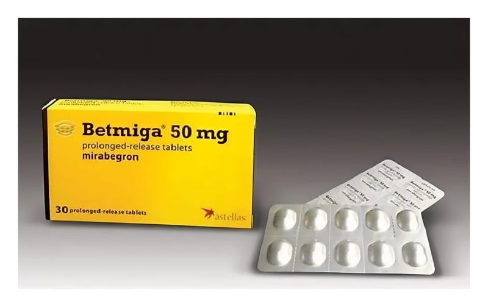

Betmiga 50 mg Uzatılmış Salımlı Film Tablet, Tablet, 30 Adet

Ne için kullanılır
KT · Bölüm 1BETMİGA 50 mg uzatılmış salımlı film tablet, aynı yüzde firma logosunun ve “355” işaretinin bulunduğu oval, sarı, film kaplı tabletler şeklindedir.
BETMİGA, 10 tablet, 20 tablet, 30 tablet, 50 tablet, 60 tablet, 90 tablet ve 100 tablet içeren alüminyum-alüminyum blister ambalajlarda bulunmaktadır.
BETMİGA, mirabegron etken maddesini içermektedir. Aşırı aktif bir mesanenin aktivitesini azaltan bir mesane kası gevşeticisidir (beta 3-adrenoreseptör agonisti de denir) ve bununla ilişkili belirtileri (semptomları) tedavi eder.
BETMİGA, yetişkinlerde aşırı aktif bir mesaneye ilişkin aşağıdakilere benzer belirtileri tedavi etmek için kullanılır: - Mesanenizi aniden boşaltma ihtiyacı (aciliyet), - Mesanenizi her zamankinden daha fazla boşaltma ihtiyacı (üriner sıklıkta artış), - Mesanenizi boşaltırken kontrol edememe (aniden idrar kaçırma).